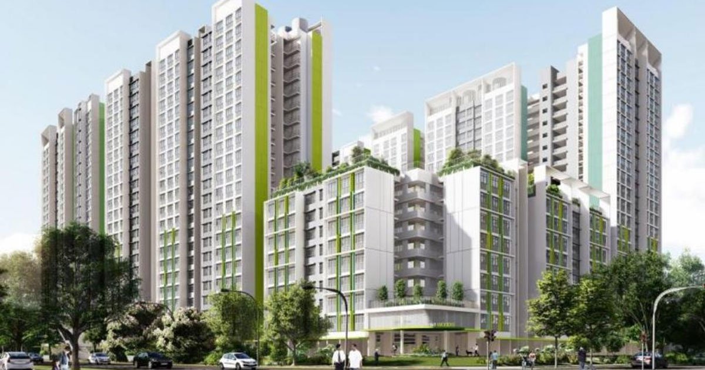

16 March 2023

| YEAR | CHANGE | REASON |
|---|---|---|
| 2008 | - | Low price point due to ongoing economic crisis. |
| 2009 | Increase | Slow recovery from the economic crisis that happened in the last year but start of Sale of Balance Flats (SBF)
policy that drove purchases up slightly. |
| 2010 | Increase | Full recovery from the economic crisis and the start of major population growth that drove up demand for housing. |
| 2011 | Decrease | Introduction of Additional Buyer's Stamp Duty caused demand to drop. |
| 2012 | Increase | Unveiling of Thomson-East Line drove the prices up of surrounding estates due to potential increase in accessibility and amenities. |
| 2013 | Decrease | Economic slowdown and increase in supply of public and private housing. |
| 2014 | Increase | Increase in development pricing due to increase confidence in over-subscription. |
| 2015 | Increase | Change in price insignificant. |
| 2016 | Decrease | Return of oversupply causing prices to fall. |
| 2017 | Increase | Easing of cooling measures by the government by cutting the Seller's Stamp Duty, and the return of en-bloc fever. |
| 2018 | Increase | Revision of Additional Buyer's Stamp Duty Rates and cooling measures implemented drove the prices up. |
| 2019 | Decrease | Introduction of Enhanced CPF Housing Grant (EHG) led to increased consumer willingness to purchase but median brought down
due to limited BTO options in the non-mature estates market. |
| 2020 | Decrease | The economic effects of the Covid pandemic hit the hardest causing people to put a hold on major life investments like property. |
| 2021 | Increase | Slight recovery from the Covid pandemic but the difficulty of attaining building supplies led to the increase in costs of building materials,
and on top of inflation, drove the prices to an all-time high. |